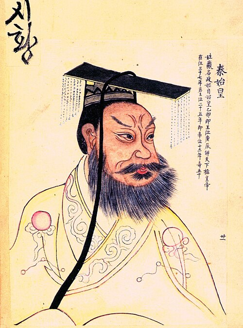

From a Small State to a Unified Empire
Qin was a small western state of the Zhou Dynasty. Under Ying Zheng (Qin Shi Huang), Qin conquered the six rival states (Han, Zhao, Wei, Chu, Yan, Qi) and unified China in 221 BCE, establishing the first imperial dynasty.

Portrait of Qin Shi Huang, the First Emperor of China
Prince 1120 QingrenSJNA